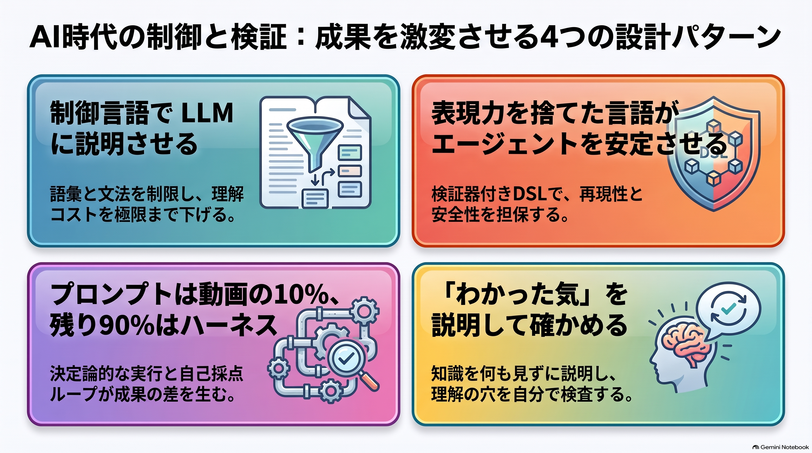
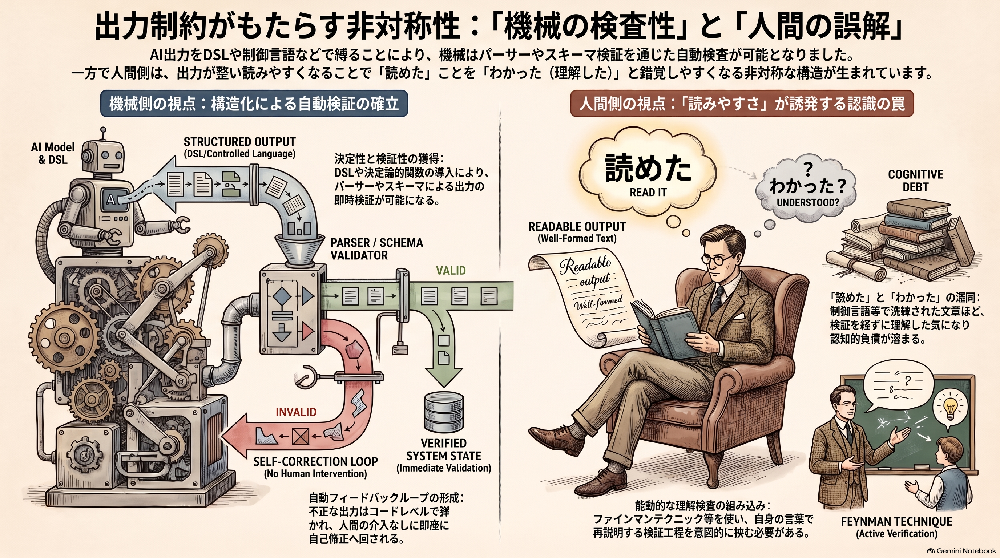

Weekly Insights: 2026-W41（2026-10-05〜10-11）
今週のホットトピック

- asd-ste100-llm-writing 制御言語で LLM に説明させる — Karpathy が「LLM の出力を理解することにずっと多くの時間を使うことになる」と前置きし、説明は ASD-STE100（語彙と文法を絞った制御言語）で書かせるとよいと勧めました。今週最多の約6.5万ブックマークです。
- dsl-as-harness 表現力を捨てた言語がエージェントを安定させる — 汎用コードでなく、語彙が有限で検証器の付いた DSL をエージェントに書かせ、実行は決定的なレンダラーに任せる、という設計論です。
- opus-motion-design-studio プロンプトは動画の10%、残り90%はハーネス — Opus 5.5 の「コードから描く動画」の流行を、@0xMovez が12ステップの講座に分解しました（約2万ブックマーク）。
- feynman-technique-ai-era 「わかった気」を説明して確かめる — AI が何度でも噛み砕いてくれるぶん「あーそういうことね」が簡単に起きる、と iwashi が警告し、@t_wada が「深く同意」した勉強法です。
深掘り
asd-ste100-llm-writing 制御言語で LLM に説明させる この tip で読むべきは、Karpathy の前置きのほうです。ボトルネックが「書かせること」から「人間が読んで理解すること」へ移る、という見立てを示しています。ASD-STE100 を名指しすると、文体指示を一から書くより少ない言葉で出力の形を揃えられる、というのが wiki 側の推論です（ポストは途中で切れており、Karpathy 自身の説明は未収集です）。打ち手の向きとしては、出力側を縛って読み手の理解コストを下げる方向です。
dsl-as-harness 表現力を捨てた言語 receptron/mulmoclaude のエッセイ「DSLs as Harnesses」の要点は、DSL の価値を「精度」ではなく「長時間・無人の委任でも検証でき、再現でき、やり直せること」に置いた点です。スキーマが記録の正本になり、パーサーが無料のフィードバックになり、有限の語彙が捏造の余地を構造的に減らします。@snakajima がこれを上の Karpathy の tip への返信で紹介し、制御言語と DSL を同じ線上に並べました。今週の2大トピックは、もともと一本の会話から出ています。
opus-motion-design-studio seek(t) と批評ループ
流行の動画はすべて、Opus が書いた seek(t)（任意の時刻のフレームをそのまま描く純関数）をヘッドレスブラウザが撮影したものです。タイマーに依存しないので毎回同じ絵が出て、修正は1行で済みます。差を生んだのは、レンダリングした静止画を Opus 自身に採点させ、全スコアが8以上になるまで直させる批評ループだ、と @0xMovez は述べます。ただしこれは同じモデルによる自己採点で、甘くなる余地があるとページ自身が問いに残しています。
feynman-technique-ai-era 「わかった気」の検査 iwashi の勉強法の核心は、出力を学習の手段でなく理解の検査として使う点です。何も見ずに「背景→提案手法→検証結果→メリット・デメリット」で話せるかを試し、詰まった箇所だけ AI に調べさせて戻ります。iwashi 自身も MoE の技術メモを書いていて、ある節で論理があやふやになって初めて理解の穴に気づいた、と書いています。検査は、読み終えた後に別途やらないと起きない、という実例です。
今週の中心テーマ
出力を縛る技術（制御言語・DSL・seek(t)）が揃って伸びた週に、同じ素材群が示したのは一つの非対称でした。縛れば機械はその出力を検査できるようになります。一方で人間のほうは、読みやすくなるほど「読めた」を「わかった」と取り違えやすくなります。

3つの素材は「出力を狭い形に閉じ込める」という同じ手を使っています。ただし、検査する主体が違います。DSL と seek(t) では検査するのは機械です。パーサー・スキーマ検証・決定的なレンダラーが、不正な出力をその場で弾きます（dsl-as-harness、opus-motion-design-studio）。ASD-STE100 では、縛った出力を受け取るのは人間で、そこに検証器はありません（asd-ste100-llm-writing）。iwashi の警告は、まさにこの空いた場所に当たります。噛み砕かれた説明ほど「わかった気」になりやすいからです（feynman-technique-ai-era）。読みやすさは理解コストを下げますが、理解できたかどうかは検査しません。むしろ、検査されないまま理解したと感じる感覚を強める側に働くことがあります。これは iwashi の記述と ASD-STE100 の仕組みを並べた本 wiki 側の推論で、どちらの著者もこの組み合わせ自体は論じていません。
過去の週との差を整理します。2026-W23 は「どの記法で AI に渡すか」という入力側の記法の話でした。2026-W40 は「AI の判断を何と照合するか」という機械側の検証の話でした。今週はその反対側にあたります。AI の出力を受け取る人間側に、検証器にあたるものが無いという話です。
このvaultにも同じ構造があります。カテゴリ配下の wiki ページ416件のうち、TL;DR を持つものが268件、mermaid 図を持つものが155件ありました（2026-10-05 時点で grep 集計）。読みやすさのための足場は厚く積まれています。一方で構造の側には validate_wiki.py という検証器があり、frontmatter・リンク・index 登録を機械が検査しています。人が読んだページを説明し返せるかを確かめる工程は、私が確認した範囲（CLAUDE.md・wiki-ingest の運用）では見当たりませんでした。
反証も一つ置きます。読みやすさと理解のトレードオフは常に起きるわけではありません。iwashi の手順でも、インプットは AI に噛み砕かせており、理解の検査は後段の「説明する」工程に任せています。つまり問題は、読みやすくすることそのものではありません。読みやすくした後に検査の工程が無いことです。TL;DR を削る必要はなく、検査を足す側で解ける可能性が高いと考えます（確信度は中程度です）。
根拠ページ
- asd-ste100-llm-writing（→ 今週のホットトピック#1）
- dsl-as-harness（→ 今週のホットトピック#2）
- opus-motion-design-studio（→ 今週のホットトピック#3）
- feynman-technique-ai-era（→ 今週のホットトピック#4）
- no-backward-compat-agents-md — @sesere115 が AGENTS.md に「社内向け・開発中なので後方互換もデータ移行もせず、常に理想的かつ KISS に書き換えて」と書いて Codex の体験が改善した、という指示です。エージェントの「念のための追加」を、前提の宣言で止める型と読めます。この前提が真である期間（外部利用者がいない間）にしか成り立たない点は、ページ自身が適用範囲として明記しています。
- overnight-delegation-prompt — @paji_a が Dots 向けに公開した就寝前の一文プロンプトです。「これまでの依頼・承認の範囲で」と自律の範囲を既存の承認の内側に閉じています。朝に8時間分の成果を読む工程が詰まらないかは、今週のテーマ（人間側の検査が追いつくか）と同じ問いです。
- openai-dots — OpenAI が DevDay で発表した、クラウド上でバックグラウンド作業するボットです。@umiyuki_ai の要約は「OpenAI 版の GrokBot」でした。公式仕様は未収集で、夜通しの委任や電話で常時つなぐ使い方が個人ポストで先に広がっています。
- html-slide-presenter — 梶谷健人が、AI に作らせた HTML スライドに Keynote 相当の発表者ツールを後付けする仕組みを配布しました。導入をAIに任せる際も「自分の環境を調べさせ、Playwright で検証させ、再生成手順を CLAUDE.md に組み込ませる」ところまで指示しています。配布物を AI に導入させる型として流用が利きます。
- chatgpt-image-anti-ai-look — ChatGPT 画像の「AI臭」を一言の追加プロンプトで消す、という @osabori_code のポストです（約1.1万ブックマーク）。捕捉できたのは導入文だけで、肝心のフレーズ9つは未収集です。
- personal-data-leak-checklist — 情報漏洩ニュースのあとに確認する個人設定のまとめです（@expokun、約2.4万ブックマーク）。本文は1項目目の途中で切れており、手順の大半は未収集です。
既存wikiとの接続
- cognitive-debt — AI の生成速度に人間の理解が追いつかない負債と、「説明できないものは出さない」というリリース基準を扱うページです。今週の ASD-STE100 は理解コストを下げる側から、ファインマンテクニックは理解を検査する側から、この負債に手を打つ方法だと位置づけられます。今週の素材を読むと、片方だけでは足りないことがわかります。
- harness-engineering — 「エージェント = モデル + ハーネス」の全体論です。DSL エッセイも動画講座も、この枠組みを明示的に前提にしています。今週の素材は、ハーネスの効果がもっぱら機械側の検査（パーサー・決定的実行・採点ループ）に宿っていることを具体的に示しています。
- llm-japanese-style-hooks — LLM の日本語の癖を、書き込み直後の Hook で検査する手法です。ASD-STE100 が「生成時に仕様で縛る」のに対し、こちらは「生成後に機械で検査する」側にあたります。ただし、どちらも検査しているのは文の形であり、読み手が理解したかどうかではありません。
sugeta-san への問い
このvaultで読みやすさのために積んできた足場（TL;DR・図・文章スタイル規約）のうち、読んだあとに「説明し返せるか」を確かめている工程はどれですか。
→ 今週数えた範囲では、構造の検査（validate_wiki.py）はあり、理解の検査はありません。足場を減らすより、iwashi の「背景→手法→検証→メリデメ」を週1ページだけ自分に当ててみるほうが、今週の素材に沿った打ち手です。詰まった箇所は、そのまま wiki ページの「問い」節に回せます。
今週の小アクション（5分）
dsl-as-harness を閉じたまま、「背景→提案手法→検証結果→メリット・デメリット」の4項目を声に出すか、メモに書き出してください。そのあとページを開き直し、言えなかった項目に印を付けます。5分で、このページを読めていたのか、わかっていたのかの区別がつきます。
いますぐAIと一緒に（コピペ）
以下をそのまま Claude Code に貼ると、今週のテーマ「読めた ≠ わかった」を、このvaultのページで検査できます。
これからファインマンテクニックで、私が wiki ページを理解しているかを検査します。ページの中身は先に見せないでください。
1. wiki/concepts/dsl-as-harness.md を読み、「背景」「提案手法」「検証・実例」「メリット・デメリット」の4項目それぞれについて、
ページに書かれている要点を内部で控えてください（まだ私に見せない）
2. 私に「このページを4項目で説明してください」とだけ聞き、私の説明を待ってください
3. 私の説明とページを突き合わせ、(a) 抜けた要点 (b) ページと食い違う説明 (c) ページに書かれていないのに私が補った推測、
の3つに分けて指摘してください。(c) は誤りとは限らないので、誤りとは区別して書いてください
4. 最後に、私が詰まった箇所を1つ選び、wiki ページの「## 問い」節に追記する1行案を出してください（編集は私が承認してから）
参照: wiki/concepts/feynman-technique-ai-era.md（説明の型と運用）
さらに読むべきページ
- feynman-technique-ai-era — 勉強法そのものより、「詰まったらそこだけ AI に調べさせて最初から話し直す」という往復の設計が読みどころです。AI を答えの供給源でなく、検査の相手として使う型になっています。
- dsl-as-harness — 終盤の「唯一の危険: 脱出口を設計する」と「モデルが賢くなるほど効く」の2節が核心です。制約をどこで効かせ、どこに出口を開けるかという判断は、AGENTS.md やスキルを書くときにもそのまま使えます。
- intermediate-notation-pattern — AI に GUI でなく DSL を操作させる設計パターンです。DSL エッセイと同じ分割を、精度とトークン量の面から論じています。両方を読むと、DSL の利点が「精度」と「検証可能性」の二つの軸に分かれて見えてきます。